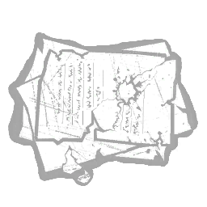

The Dredge needs to gain 300 Nightfall charges to activate Nightfall
You gain Nightfall charges through several different means:
- You passively gain 0.25 charges every second
- Every time you teleport to your remnant you gain 10 charges
- Every time you land a successful attack on a survivor you gain 20 charges
- Every time you hook a survivor you gain 20 charges
-
While inside a locker, or while teleporting to a locker, gain 6 additional
charges per second
- Note: Contrary to popular belief, teleporting to a locker does not count as a "Remnant teleport"—you do not gain 10 charges per locker teleport. It is purely based on time spent teleporting to lockers. Technically this does mean that more charges are generated the farther away the locker is
- For every survivor that is currently injured, gain an additional 1 charge per second
4 different add-ons affect how quickly The Dredge can gain Nightfall charges:
 |
Wooden Plank Increases the charges added to the Nightfall meter for hooking survivors by +25% |
|  |
Burnt Letters Increases the charges added to the Nightfall meter for injuring survivors by +25% |
 |
Fallen Shingle increases the charge rate of the Nightfall meter while teleporting to lockers or while remaining inside lockers by +15% per second |
|
Malthinker's Skull Increases the charge rate of the Nightfall meter while survivors are injured by +25% per second |